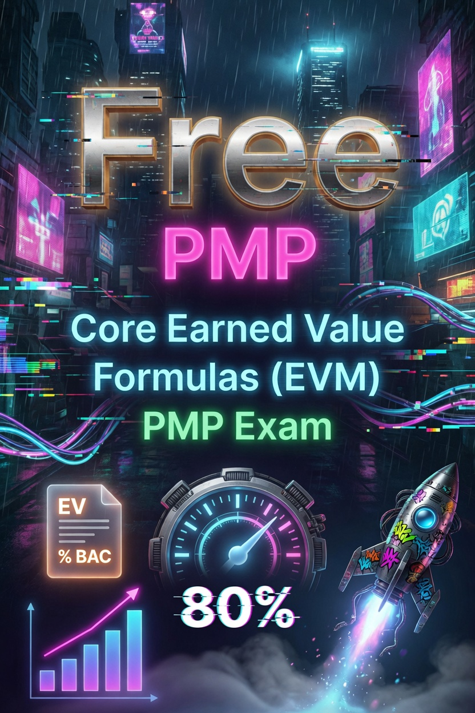

PMP Formulas Guide — Earned Value Management with 10 Practice Questions

If you're studying for the PMP exam, you already know the EVM questions are where people lose points. Not because the math is hard — it's basic arithmetic — but because the formulas blur together under time pressure and the scenario wording trips you up. This guide breaks down every formula you need and gives you 10 practice questions to lock it in.
EVM Formula Reference
Before we jump into the questions, here's every formula in one place. Bookmark this section — you'll be flipping back to it.
The Building Blocks
These three values show up in almost every EVM calculation. If you can correctly identify PV, EV, and AC from a scenario, you're 80% of the way there.
- Planned Value (PV) — The authorized budget for the work you planned to have done by now.
- Earned Value (EV) — The authorized budget for the work you actually completed by now.
- Actual Cost (AC) — What you actually spent to get that work done.
- Budget at Completion (BAC) — The total budget for the entire project.
Variance Formulas
- Schedule Variance (SV) = EV − PV. Positive = ahead of schedule, negative = behind.
- Cost Variance (CV) = EV − AC. Positive = under budget, negative = over budget.
- Variance at Completion (VAC) = BAC − EAC. Positive = under budget at the finish line, negative = over.
Performance Index Formulas
- Schedule Performance Index (SPI) = EV / PV. Greater than 1.0 = ahead of schedule, less than 1.0 = behind.
- Cost Performance Index (CPI) = EV / AC. Greater than 1.0 = under budget, less than 1.0 = over budget.
- To-Complete Performance Index (TCPI) = (BAC − EV) / (BAC − AC). This tells you the CPI you need to hit on remaining work to stay within the original budget.
Forecasting Formulas
- Estimate at Completion (EAC) — This one has multiple flavors depending on what you assume about future performance:
- If you expect the same cost efficiency: EAC = BAC / CPI
- If future work will be at the planned rate: EAC = AC + (BAC − EV)
- If both CPI and SPI will influence remaining work: EAC = AC + [(BAC − EV) / (CPI × SPI)]
- If the original plan is shot and you need a fresh estimate: EAC = AC + bottom-up ETC
- Estimate to Complete (ETC) = EAC − AC. This is the expected cost to finish all remaining work.
10 Practice Questions
Try to work through each one before looking at the solution. The key is getting comfortable spotting which numbers map to PV, EV, AC, and BAC — the math itself never gets harder than division and subtraction.
Question 1
A software development project has a budget at completion of $500,000. By the end of month 6, the team was scheduled to complete 45% of the work. At that point, they had actually completed 40% of the work and spent $220,000. What are the PV, EV, AC, SV, and CV?
Solution:
- BAC = $500,000
- PV = 45% × $500,000 = $225,000 (this is what you planned to have done)
- EV = 40% × $500,000 = $200,000 (this is what you actually got done, measured in budget terms)
- AC = $220,000 (this is what you spent)
- SV = EV − PV = $200,000 − $225,000 = −$25,000 → behind schedule
- CV = EV − AC = $200,000 − $220,000 = −$20,000 → over budget
Both variances are negative, which means this project is behind schedule and over budget. Not a great spot to be in, but catching it at month 6 gives you time to correct course.
Question 2
A construction project has a BAC of $2,000,000. At the status date, the project is 30% complete but was planned to be 35% complete. The actual costs incurred so far total $550,000. Calculate the CPI and SPI, and interpret what they mean.
Solution:
- BAC = $2,000,000
- PV = 35% × $2,000,000 = $700,000
- EV = 30% × $2,000,000 = $600,000
- AC = $550,000
- CPI = EV / AC = $600,000 / $550,000 = 1.09 → under budget (you're getting $1.09 worth of work for every dollar spent)
- SPI = EV / PV = $600,000 / $700,000 = 0.86 → behind schedule (you're progressing at 86% of the planned rate)
This is actually a mix worth noticing. The CPI above 1.0 means you're spending efficiently — whatever you're doing cost-wise is working. But the SPI below 1.0 means you're just not getting enough done. The project is cost-efficient but behind schedule, which can happen when a small, efficient team is working slower than planned.
Question 3
A project has a CPI of 1.15 and a BAC of $1,200,000. If this cost efficiency continues for the remainder of the project, what is the EAC?
Solution:
- BAC = $1,200,000
- CPI = 1.15
- EAC = BAC / CPI = $1,200,000 / 1.15 = $1,043,478
When the problem says "if this cost efficiency continues," your brain should immediately go to EAC = BAC / CPI. That formula assumes the same CPI will hold for the rest of the project. The result tells you that at the current efficiency rate, you'll finish about $156,522 under budget. Nice.
Question 4
A project with a BAC of $800,000 has completed 50% of the work. The EV is $400,000 and the AC is $450,000. The remaining work is expected to be completed at the planned rate (not at the current cost efficiency). Calculate the EAC.
Solution:
- BAC = $800,000
- EV = $400,000
- AC = $450,000
- EAC = AC + (BAC − EV) = $450,000 + ($800,000 − $400,000) = $450,000 + $400,000 = $850,000
The phrase "at the planned rate" is your clue to use the formula EAC = AC + (BAC − EV). This formula says: take what you've already spent, then add the remaining budget (BAC − EV) as if you'll spend it exactly according to plan. You're basically saying the overrun so far doesn't affect how you'll spend going forward. That's the optimistic EAC calculation.
Question 5
A project has a BAC of $1,500,000. The PV is $750,000, EV is $600,000, and AC is $720,000. If both the CPI and SPI are expected to influence the remaining work, calculate the EAC.
Solution:
- BAC = $1,500,000
- PV = $750,000
- EV = $600,000
- AC = $720,000
- CPI = EV / AC = $600,000 / $720,000 = 0.833
- SPI = EV / PV = $600,000 / $750,000 = 0.80
- EAC = AC + [(BAC − EV) / (CPI × SPI)] = $720,000 + [($1,500,000 − $600,000) / (0.833 × 0.80)]
- = $720,000 + [$900,000 / 0.6664]
- = $720,000 + $1,350,405
- = $2,070,405
This is the most aggressive EAC formula because it factors in both cost and schedule performance. When both CPI and SPI are below 1.0, dividing by their product makes the remaining work significantly more expensive. That's realistic if being behind schedule is driving up costs (think overtime, penalties, or resource inefficiencies).
Question 6
A project has a BAC of $3,000,000, an EV of $1,800,000, and an AC of $2,100,000. Calculate the TCPI based on the original BAC. Interpret what it means.
Solution:
- BAC = $3,000,000
- EV = $1,800,000
- AC = $2,100,000
- TCPI (BAC) = (BAC − EV) / (BAC − AC) = ($3,000,000 − $1,800,000) / ($3,000,000 − $2,100,000)
- = $1,200,000 / $900,000 = 1.33
A TCPI of 1.33 is rough. It means you need a CPI of 1.33 on all remaining work to still hit the original BAC. Given your current CPI is EV / AC = $1,800,000 / $2,100,000 = 0.86, jumping from 0.86 to 1.33 is a massive efficiency gain. That's usually not realistic, which is why in practice you'd want to calculate EAC and present that to stakeholders as the more likely outcome.
Question 7
A project has a BAC of $2,500,000. The current EV is $1,000,000 and AC is $1,300,000. The project manager calculates the EAC as $3,250,000 using the BAC/CPI formula. The sponsor asks whether that EAC is realistic. What is the VAC, and what does it tell you?
Solution:
- BAC = $2,500,000
- EAC = $3,250,000
- VAC = BAC − EAC = $2,500,000 − $3,250,000 = −$750,000
A negative VAC means you're projecting a cost overrun at completion — $750,000 over budget in this case. That's a 30% overrun on a $2.5M project, which is significant. The VAC gives you the bottom-line number in dollars, which stakeholders understand better than a ratio. "We're tracking to be $750K over" tends to get more attention than "our CPI is 0.77."
Question 8
A project has a BAC of $1,800,000. By the status date, the PV is $900,000, EV is $720,000, and AC is $660,000. The project manager expects that the remaining work will be completed at the planned rate. Calculate the ETC.
Solution:
- BAC = $1,800,000
- PV = $900,000
- EV = $720,000
- AC = $660,000
- EAC = AC + (BAC − EV) = $660,000 + ($1,800,000 − $720,000) = $660,000 + $1,080,000 = $1,740,000
- ETC = EAC − AC = $1,740,000 − $660,000 = $1,080,000
ETC always comes after EAC — you can't calculate ETC without knowing EAC first. The logic here is clean: you already spent $660K, you expect to finish at $1.74M, so you need $1.08M more. In simpler terms: what you've already burned plus what you still need equals the total projected cost.
Question 9
A project is 60% complete with a BAC of $4,000,000. The actual costs to date are $2,600,000. The team has observed that the project has been running at 90% cost efficiency consistently. Management wants to know the most realistic EAC given this trend.
Solution:
- BAC = $4,000,000
- EV = 60% × $4,000,000 = $2,400,000
- AC = $2,600,000
- CPI = EV / AC = $2,400,000 / $2,600,000 = 0.923
When management asks for the "most realistic" EAC and you have a consistent trend, use EAC = BAC / CPI. That formula assumes your past performance pattern will continue, which is usually the safest bet.
- EAC = $4,000,000 / 0.923 = $4,333,333
The project is trending to finish about $333K over budget. The 90% efficiency (CPI of roughly 0.9) has been consistent, so there's no reason to expect improvement without a specific intervention plan. If management wants to get back to the original BAC, you'd need a TCPI above 1.0 — and you should be able to walk them through what that would require.
Question 10
A project has a BAC of $2,200,000. Current data shows EV of $1,100,000, AC of $1,375,000, and PV of $1,200,000. Calculate CPI, SPI, EAC (assuming the same cost efficiency), and the TCPI based on BAC. Then explain to a stakeholder whether the TCPI is achievable.
Solution:
- BAC = $2,200,000
- PV = $1,200,000
- EV = $1,100,000
- AC = $1,375,000
- CPI = EV / AC = $1,100,000 / $1,375,000 = 0.80
- SPI = EV / PV = $1,100,000 / $1,200,000 = 0.917
- EAC = BAC / CPI = $2,200,000 / 0.80 = $2,750,000
- TCPI (BAC) = (BAC − EV) / (BAC − AC) = ($2,200,000 − $1,100,000) / ($2,200,000 − $1,375,000) = $1,100,000 / $825,000 = 1.33
Here's the reality check. Your current CPI is 0.80 — you're getting 80 cents of work for every dollar spent. To hit the original BAC, you'd need a TCPI of 1.33, which means suddenly performing at 133% efficiency. That's going from underwater to superhuman, and it's not realistic without a major change in how the work is being done.
The honest answer to the stakeholder: "We're projecting an EAC of $2.75M based on our consistent performance trend. Getting back to the $2.2M BAC would require us to perform at 33% above plan for the rest of the project, which isn't realistic without significant changes to scope, schedule, or resources. I recommend we baseline the EAC at $2.75M and discuss corrective actions to improve our CPI going forward."
Key Takeaways for the PMP Exam
A few things to keep in mind as you practice:
- PV, EV, and AC are always your starting point. If you can pull these three numbers from a scenario, everything else follows. The most common mistake is mixing up PV and EV — remember that PV is what you planned, EV is what you actually completed.
- SV and CV are differences. They tell you direction (ahead/behind, over/under) but not efficiency. Use SPI and CPI when you need a ratio.
- EAC has four formulas. The exam loves testing which one to use. The key phrase to listen for: "same cost efficiency" → BAC/CPI, "planned rate" → AC + (BAC − EV), "both CPI and SPI" → the compound formula.
- ETC always follows EAC. Don't try to calculate ETC directly — do EAC first, then subtract AC.
- TCPI tells you if your BAC is still realistic. If TCPI is significantly above 1.0 and your current CPI is below 1.0, you need to have an honest conversation about rebaselining.
Conclusion
EVM questions on the PMP exam aren't about whether you can do arithmetic. They're about whether you can read a scenario, correctly identify which numbers map to which EVM terms, and pick the right formula for what's being asked. The 10 questions above cover the most common patterns you'll see. If you can work through these comfortably, you're in good shape for exam day.
Last updated: June 13, 2026